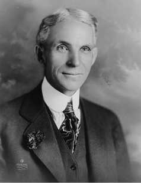

|  |
| Генри Форд (30 июля 1863 — 7 апреля 1947) — Американский инженер, промышленник, изобретатель, автор 161 патента, один из основателей автомобильной промышленности США, основатель “Форд мотор компани” (Ford Motor Company), организатор поточно- конвейерного производства. |
|
Человек, первый получивший водительские права, первый обладатель личного автомобиля, оснащенного двигателем внутреннего сгорания, пожалуй самый известный в мире автомобилист, пионер и энтузиаст автомобилестроения. |
|
Генри Форд об успехе При наличии энтузиазма вы можете достичь всего. Энтузиазм – это блеск ваших глаз, стремительность походки, крепость рукопожатия, непреодолимый прилив энергии и воли для претворения в жизнь ваших идей. Энтузиасты – это борцы. Энтузиазм – краеугольный камень всего прогресса! Только с ним возможен успех. Без него у вас есть только возможности. |
|
Еще в раннем возрасте, Генри пытался хоть как-то облегчить тяжелый труд родителей с помощью своих механических изобретений. Из воспоминаний Генри Форда: «Еще в 12 лет, когда мне каждые день приходилось таскать из колодца ведра с водой, преодолевая крутую лестницу с 20-ти килограммовым грузом я думал о том, что все можно облегчить — всего лишь добавив 2 метра водопроводных труб». Желание «облегчить» и «сделать иначе» с возрастом все чаще посещало его. Кода отец подарил сыну карманные часы, тот не вытерпел и, открыв заднюю крышку, увидел перед собой нечто невероятное. Все части механизма взаимодействовали между собой. Один механизм двигал другой, каждая деталь была важна и несла за собой какую-то роль. Разглядывая механизм, мальчик размышлял, что весь мир —это такой же большой механизм, в котором все взаимосвязано. Одно движение поражается другим, все имеет свои рычаги. Только нужно знать на какие правильнее всего воздействовать. В таком случае, успех неминуем. Генри так заинтересовал часовой механизм, что он довольно хорошо разобрался в конструкции часов, сделав ремонт часов одним из своих способов заработка в юные годы. |
|
Принципы управления Генри Форда: Не бойся неудач. Кто боится неудач, тот сам ограничивает круг своей деятельности. Неудачи дают только повод начать снова и более умно. Честная неудача не позорна: позорен страх перед неудачей. Прошлое полезно только в том отношении, что указывает нам пути и средства к развитию. |